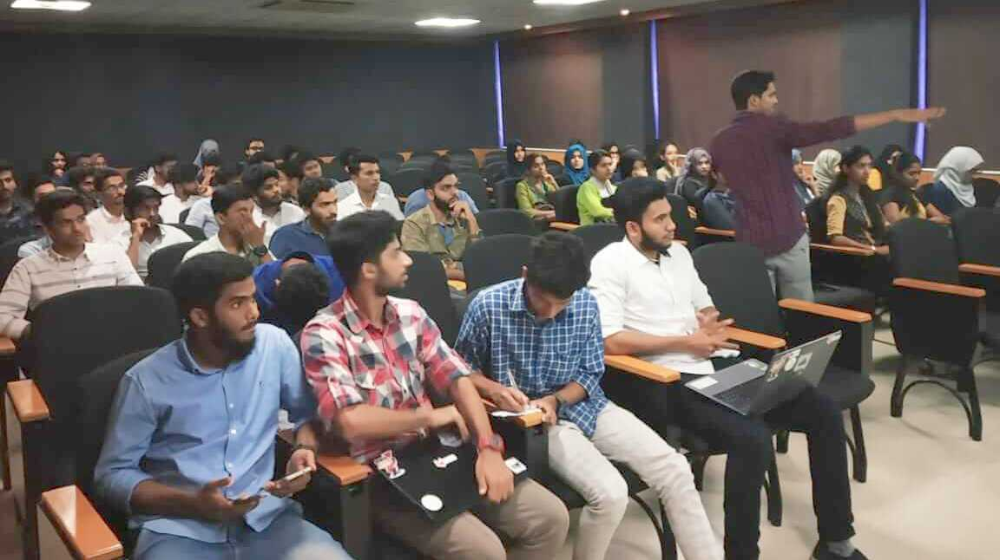
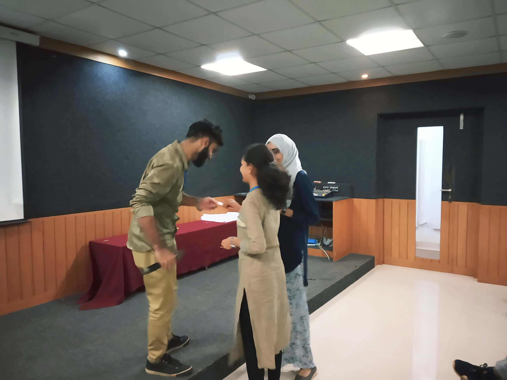
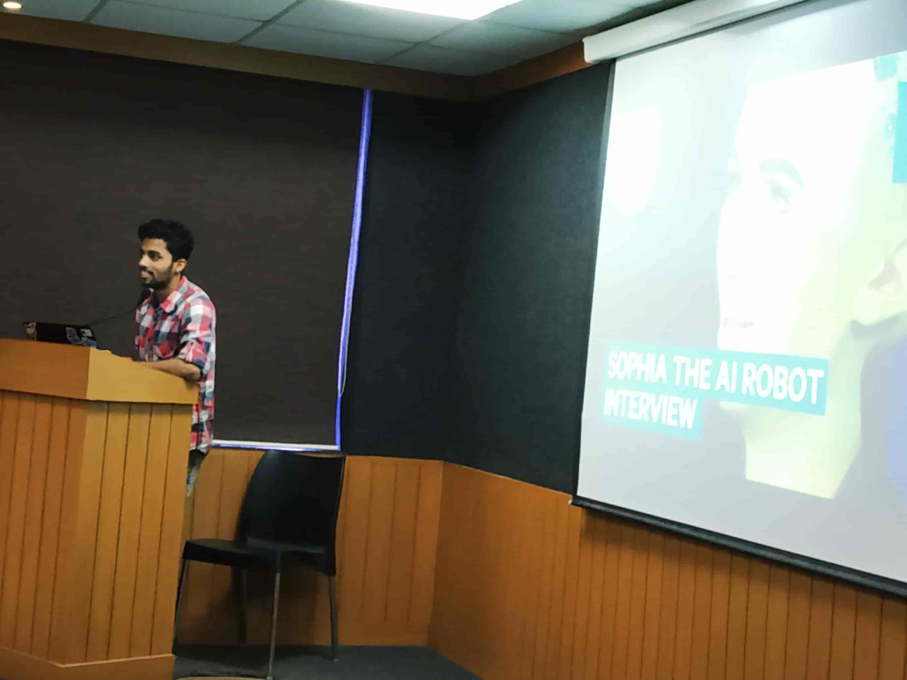
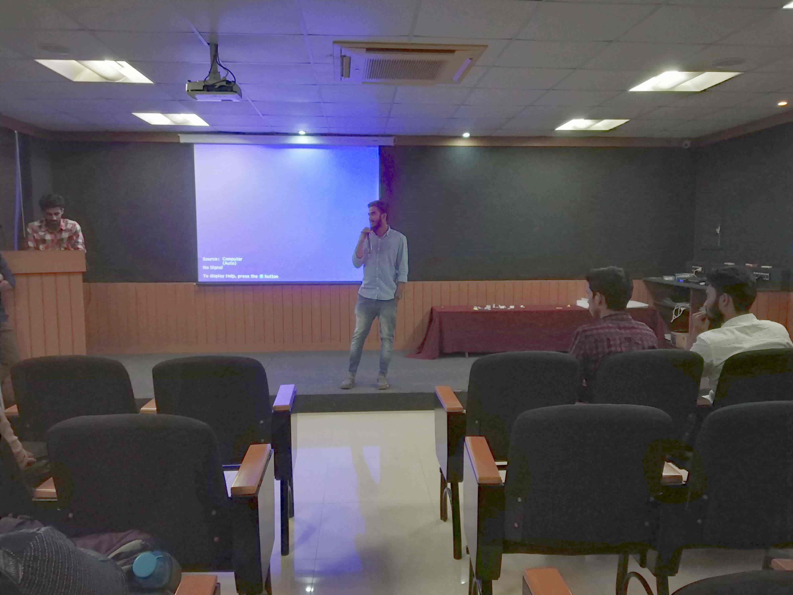
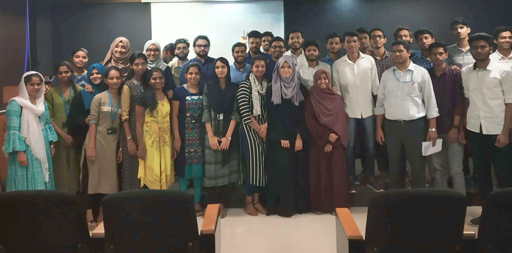

My experience of Techyon
The event Techyon was held on the 15th of February, in exchange to our extra-long-seeming lecture hours of Friday mornings.
It started off by Arkaan Sayed who gave a brief introduction about what to expect from this event.
The first session dealt with the basic introduction to Cloud Computing and what are its uses, which was done by Muhammed Shakir and Ahmed Ansad.
Ahmed Ansad demonstrated the hosting of a searX.me instance from local machine.
To make the event more interactive and to lighten the mood of the audience, a dare game was held, where a number was called at random and the person sitting on the chair corresponding to that number had to come forward and do a dare.
Moving on, the next session was taken up by Vishnu Bhagirathan, Sharon M and Shayiz KP.
Vishnu gave an introduction to Artificial Intelligence, followed by Sharon who gave a gist about the simplicity of the Python programming language. Next up, was Shayiz. He spoke about the importance of doing something worthwhile in life by gaining knowledge, and how Glug can help with that through the conduction of various workshops and more. This really helped to build up the interest of the audience in Glug and to contribute more to it.
The next session was about IoT- Internet of Things and where it is applied in our daily life, including a brief about the Micro Bit. This was by Munawir E and Sabith OK.
The speakers had also attended the FSMK camp during the summer break and were very keen on sharing their experiences in order to encourage the students to attend the camp the next time it's held. They spoke about how the camp had technical and non-technical events, and helped in meeting new people and discussing ideas, and kept stressing on how enjoyable it was on a whole.
Altogether, the event was a success as it managed to gather the interest of the 2nd year students and inspire them to look outside the curriculum.
Being a member of GEM was a new experience for us and helped us learn about the work that needs to be done in the management of an event. It gave us an opportunity to display our ideas and talents by designing posters, organising the basic layout and giving our suggestions on how to improve the event.